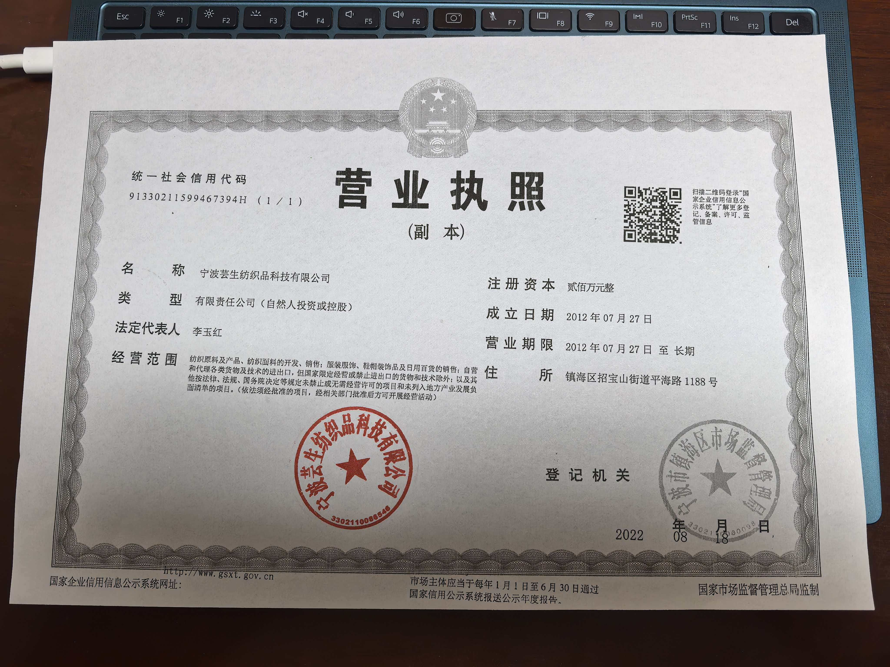

高品质纱线供应商
全球纺织供应链服务商
宁波芸生纺织品科技有限公司是一家工贸一体的纺纱企业，专业从事各类高品质纱线的研发、生产与销售，产品远销巴基斯坦、印度、孟加拉、越南、土耳其等国。
High-Quality Yarn Supplier
Global Textile Supply Chain Partner
Ningbo Yunsheng Textile Technology Co., Ltd. is an integrated manufacturing and trading spinning enterprise, specializing in the R&D, production and sales of various high-quality yarns, exported to Pakistan, India, Bangladesh, Vietnam, Turkey and beyond.
宁波芸生纺织品科技有限公司是一家工贸一体的纺纱企业，主要销售各类高品质全棉纱线(50S/1-120S/1)精梳紧密纺纱、各类进口棉纱（6S/1-32S/1）,以及各类纱线的加工业务等。
公司现已经取得有机棉认证（GOTS,OCS），再生认证（GRS,RECYCLE COTTON AND RECYCLE POLYESTER），非洲棉证书（CMIA）,美棉证书（USCTP）,良好棉证书（BCI）等。出口产品主要销往巴基斯坦，印度，孟加拉，越南，土耳其等国。进口纱线主要销往河南、河北、浙江、广东、江苏、江西、山东等地。
公司自成立以来，凭着优良的产品品质、合理的价格以及完善快捷的服务，赢得了国内外客户的信赖。公司一直以来公司采用严格的管理系统（现已通过GOTS,OCS,GRS,CMIA,BCI等认证），生产效率高，赢得广大客户的认可。
公司本着"勇于开拓、不断进取"的精神，坚持"质量为本、信誉第一"的承诺，紧跟国内、外市场的发展和需要，满足客人的需求。公司推崇"以人为本"的管理理念，为员工提供充满挑战的发展平台及完善的福利待遇。诚邀有识之士加入宁波芸生纺织品科技有限公司，与公司携手并进、乘新时代的战船，破浪前行！
2020年第四期集中挂牌 · 宁波股权交易中心

代码：782327

- 公司地址： 宁波市镇海区招宝山街道平海路1188号
- 企业类型： 工贸一体 / 高新技术企业
- 生产基地： 宁波 · 绍兴
- 海外办事处： 巴基斯坦、孟加拉、土耳其
- 联系电话： +86-574-87336688
- 电子邮箱： contact@yunsheng-textile.com
- 甬股交代码： 782327（2020年第四期挂牌）
Ningbo Yunsheng Textile Technology Co., Ltd. is an integrated manufacturing and trading enterprise specialized in the spinning industry. Our company mainly engages in the sales of a wide variety of high-quality pure cotton yarns, including combed compact spinning yarns ranging from 50S/1 to 120S/1, as well as various imported cotton yarns with counts from 6S/1 to 32S/1. Moreover, we offer processing services for different types of yarns.
The company has obtained certifications including Global Organic Textile Standard (GOTS), Organic Content Standard (OCS) for organic cotton; Global Recycled Standard (GRS) as well as certificates for recycled cotton and recycled polyester; Cotton Made in Africa (CMIA), U.S. Cotton Trust Protocol (USCTP) and Better Cotton Initiative (BCI). Our export products are mainly sold to countries such as Pakistan, India, Bangladesh, Vietnam, and Turkey. Meanwhile, the imported yarns find their markets in numerous domestic provinces, including Henan, Hebei, Zhejiang, Guangdong, Jiangsu, Jiangxi, and Shandong.
Since its establishment, our company has won the trust of customers at home and abroad, thanks to our outstanding product quality, reasonable prices, and comprehensive, efficient services. We have implemented a rigorous management system, which has been certified by multiple international standards, such as GOTS, OCS, GRS, CMIA, and BCI. This strict management has led to high production efficiency and has been widely recognized by our customers.
Upholding the spirit of "daring to explore and constantly forging ahead", we adhere to the commitment of "quality first and reputation foremost". We closely follow the development trends and demands of both the domestic and international markets, striving to meet the various needs of our clients. Our company advocates the "people-oriented" management philosophy. We provide our employees with a challenging career development platform and a complete package of welfare benefits. We sincerely invite talented individuals to join Ningbo Yunsheng Textile Technology Co., Ltd. Let's join hands, ride the waves on the ship of the new era, and sail forward together!
4th Batch Centralized Listing 2020 · Ningbo Equity Trading Center
Code: 782327
- Address: No.1188 Pinghai Road, Zhaobaoshan Street, Zhenhai District, Ningbo, China
- Business Type: Integrated Manufacturing & Trading / High-Tech Enterprise
- Production Bases: Ningbo · Shaoxing
- Overseas Offices: Pakistan, Bangladesh, Turkey
- Phone: +86-574-87336688
- Email: contact@yunsheng-textile.com
- Ningbo Equity Code: 782327 (Listed 2020)
精梳紧密纺纱
50S/1-120S/1高品质全棉纱线，条干均匀、强力高，满足高端织造需求。
进口棉纱
6S/1-32S/1各类进口棉纱，来源稳定，品质可靠，供应国内主要纺织省份。
纱线加工业务
提供来料加工、定制纺纱、染色加工等一站式纱线解决方案。
有机棉认证产品
GOTS/OCS认证有机棉纱线，满足绿色环保纺织品市场需求。
再生纤维纱线
GRS认证再生棉/涤纶纱线，支持循环经济与可持续发展。
全球供应链服务
从巴基斯坦到土耳其，从河南到广东，覆盖国内外主要纺织市场。
Combed Compact Yarn
50S/1-120S/1 high-quality pure cotton yarn with even count and high strength for premium weaving.
Imported Cotton Yarn
6S/1-32S/1 various imported cotton yarns with stable supply and reliable quality for China's major textile provinces.
Yarn Processing Services
One-stop yarn solutions including toll manufacturing, custom spinning, and dyeing processing.
Organic Cotton Products
GOTS/OCS certified organic cotton yarns meeting green and eco-friendly textile market demand.
Recycled Fiber Yarns
GRS certified recycled cotton/polyester yarns supporting circular economy and sustainable development.
Global Supply Chain
From Pakistan to Turkey, from Henan to Guangdong, covering major textile markets worldwide.
严格管理系统 · 国际认证体系
公司采用严格的管理系统，已通过GOTS,OCS,GRS,CMIA,BCI等多项国际认证，生产效率高，品质稳定可靠。
我们紧跟国内外市场发展和客户需求，持续投入纺纱工艺改进与新品开发，致力于为客户提供最具性价比的纱线产品。
品质检测中心
Strict Management System · International Certifications
We have implemented a rigorous management system certified by GOTS, OCS, GRS, CMIA, BCI and other international standards, ensuring high production efficiency and stable quality.
Following market trends and customer needs, we continuously invest in spinning process improvement and new product development, committed to providing the most cost-effective yarn products.
Quality Testing Center